Un papillon, un cuisinier, des poissons et un chant de deuil : quatre récits d’un penseur chinois qui ne ressemble à personne.
Zhuangzi (ou Zhuang Zhou, appelé aussi « Zhou ») est un penseur du taoïsme, courant chinois qui invite à suivre le Dao (la « Voie »), l’ordre naturel des choses. Le livre qui porte son nom est fait d’histoires drôles, de paradoxes et de dialogues, plus que de raisonnements en règle.
D’après le Zhuangzi (IVe siècle avant notre ère et après) : le rêve du papillon (ch. 2), le cuisinier Ding (ch. 3), la joie des poissons (ch. 17) et la mort de la femme de Zhuangzi (ch. 18). Les dialogues sont des paraphrases ou des inventions.
Touchez une image pour l’agrandir, puis passez d’une case à l’autre avec les flèches ‹ › ou celles du clavier.
Planche 1
Le rêve du papillon
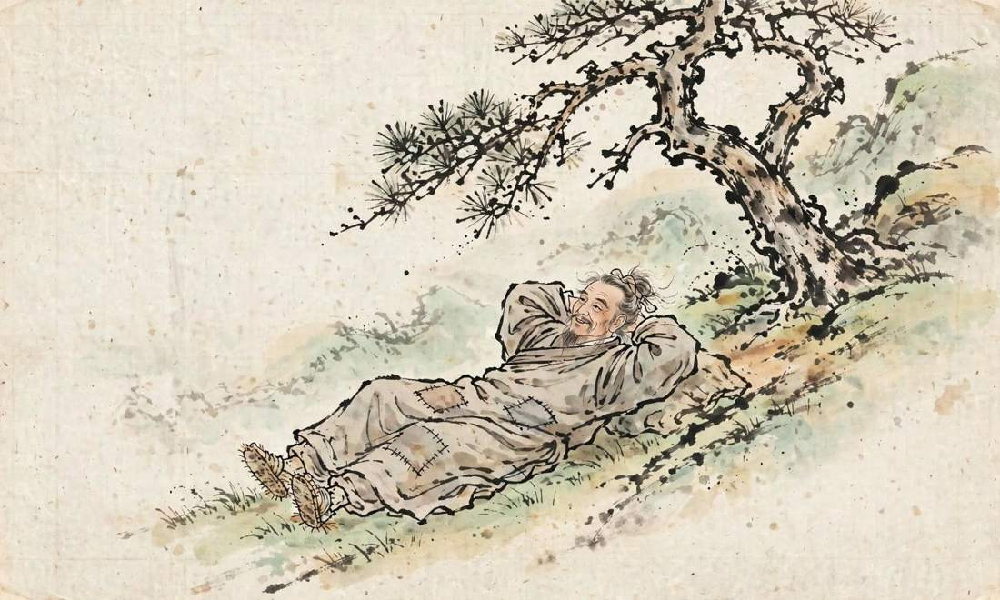
ZhuangziUn peu de repos, au bord du chemin.
Zhuangzi (de son nom Zhuang Zhou, « Zhou » pour faire court), penseur chinois du IVe siècle avant notre ère, s’allonge sous un arbre pour faire la sieste.
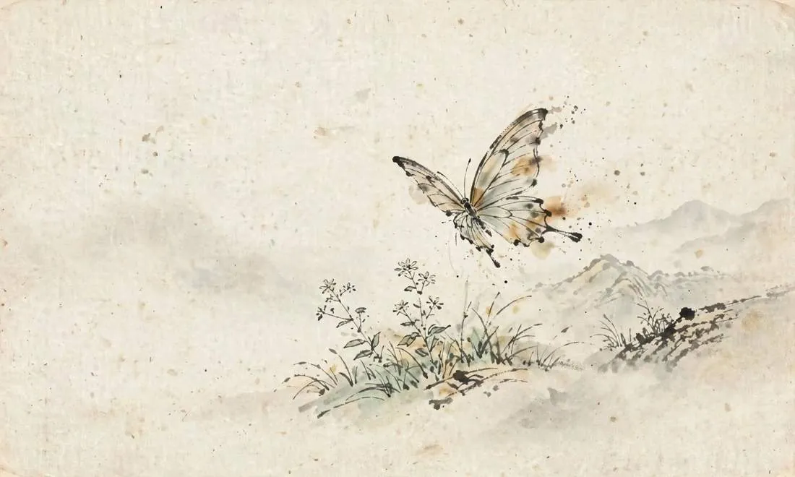
ZhuangziQuel plaisir de voler !
Il s’endort et rêve qu’il est un papillon, qui voltige joyeusement. Dans son rêve, il ne sait plus qu’il est Zhou.
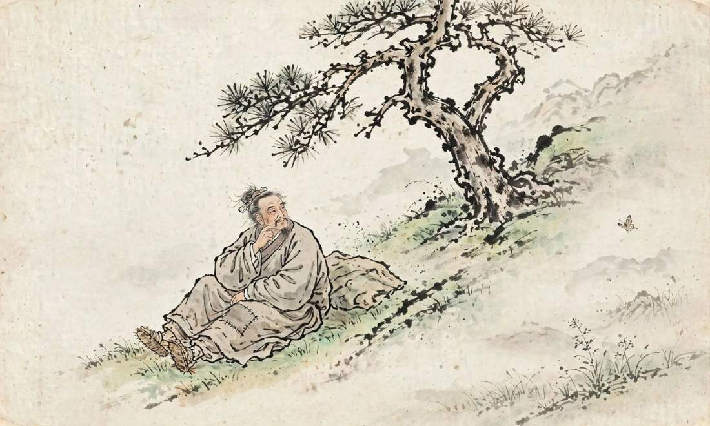
ZhuangziSuis-je Zhou qui rêvait d’être papillon, ou un papillon qui rêve d’être Zhou ?
Il se réveille : le voilà bien Zhou, solide et reconnaissable. Mais comment être sûr qu’il n’est pas un papillon en train de rêver qu’il est Zhou ?
Planche 2
Le cuisinier Ding
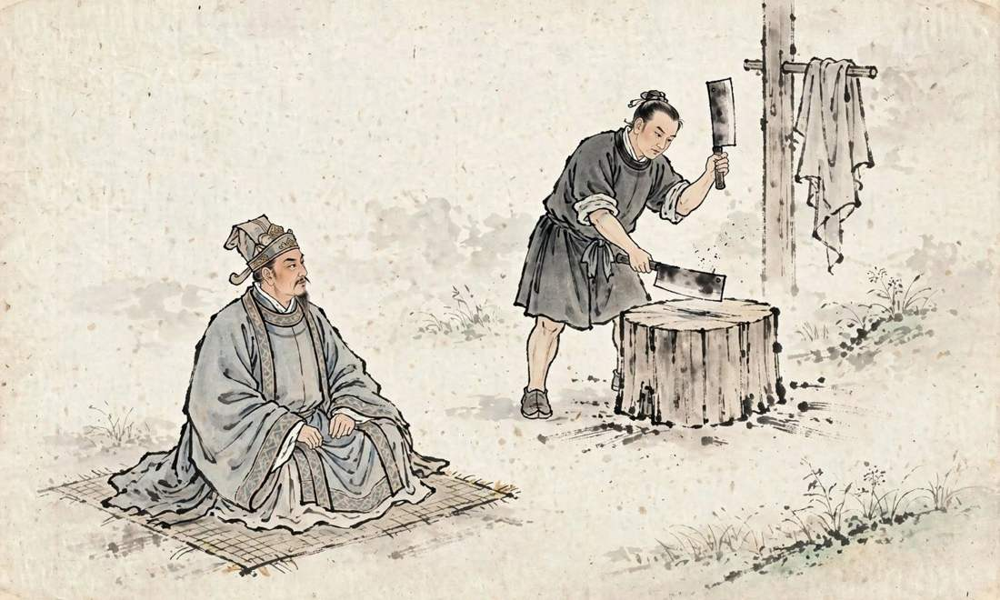
Le prince WenhuiExcellent ! Je ne savais pas que l’art pouvait aller si loin.
Le prince Wenhui regarde son cuisinier, Ding, découper un bœuf (c’est le boucher du palais). Chaque geste de la main, de l’épaule, du pied et du genou suit un rythme, comme une danse.
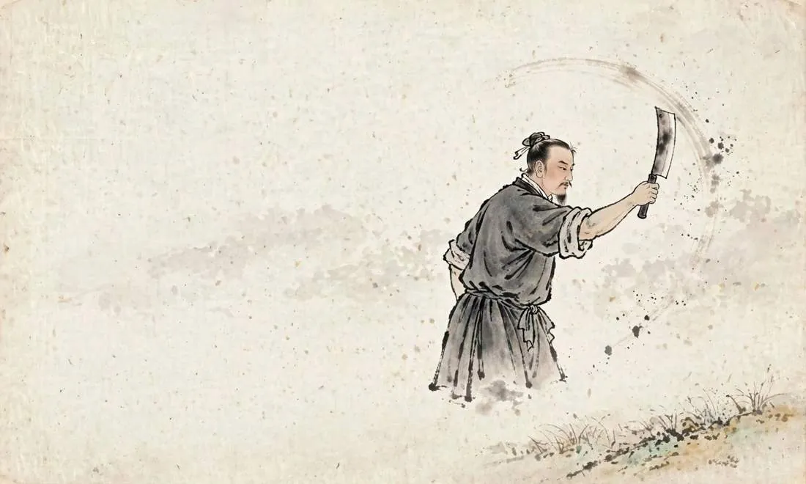
DingCe que j’aime, c’est la Voie, bien au-delà de la technique.
Le couteau chante en entrant : le bruit s’accorde à une musique ancienne. Le prince le félicite de son habileté. Ding répond : « Ce que j’aime, c’est la Voie (le Dao), qui va bien au-delà de la technique. »
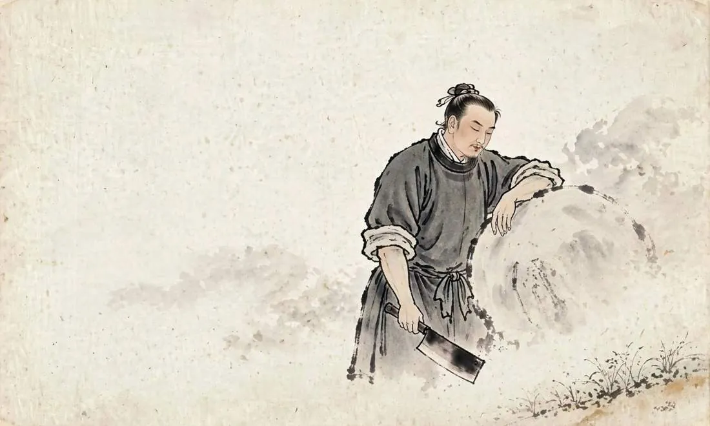
DingJe ne regarde plus avec les yeux.
Au début, il ne voyait que le bœuf entier. Après trois ans, il ne voit plus le bœuf : il ne regarde plus avec les yeux : il sent, et sa lame suit la structure naturelle de l’animal, les espaces entre les articulations.
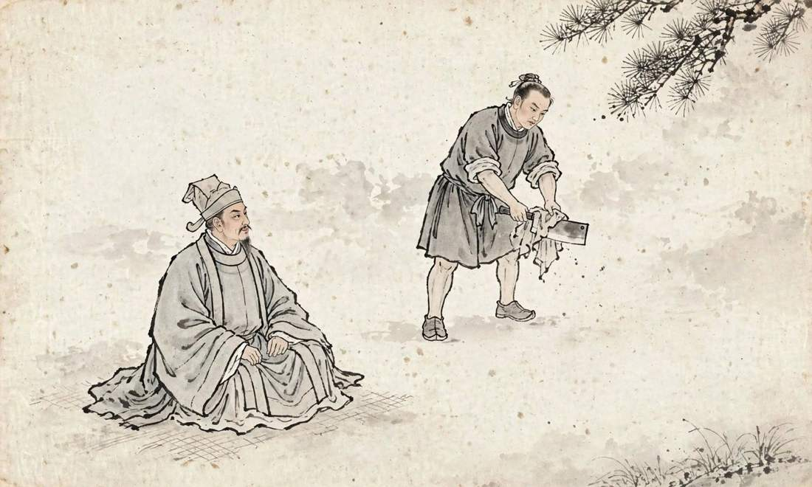
Le prince WenhuiJ’ai écouté Ding, et j’ai appris comment prendre soin de la vie.
Un bon cuisinier change de couteau chaque année (il coupe), un médiocre chaque mois (il tranche à coups de force). Celui de Ding a dix-neuf ans et sert encore comme neuf, car la lame passe dans les vides. Le prince en conclut : « J’ai appris à prendre soin de la vie. »
Planche 3
La joie des poissons
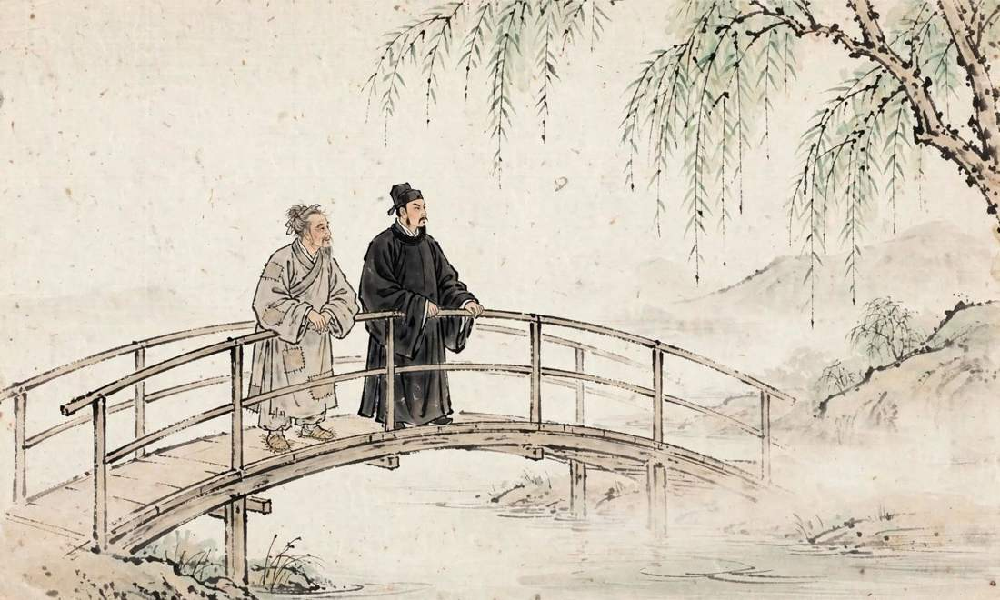
HuiziBelle matinée sur la rivière Hao.
Zhuangzi se promène avec son ami Huizi sur un pont, au-dessus de la rivière Hao.
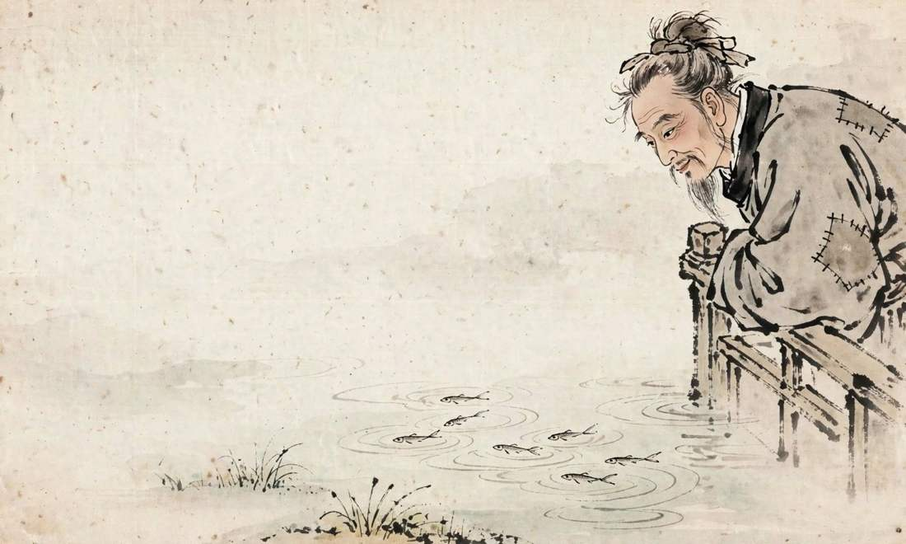
ZhuangziVoyez comme ils nagent, libres : voilà la joie des poissons.
Zhuangzi regarde les petits poissons : « Voyez comme ils nagent librement ! Voilà la joie des poissons. »
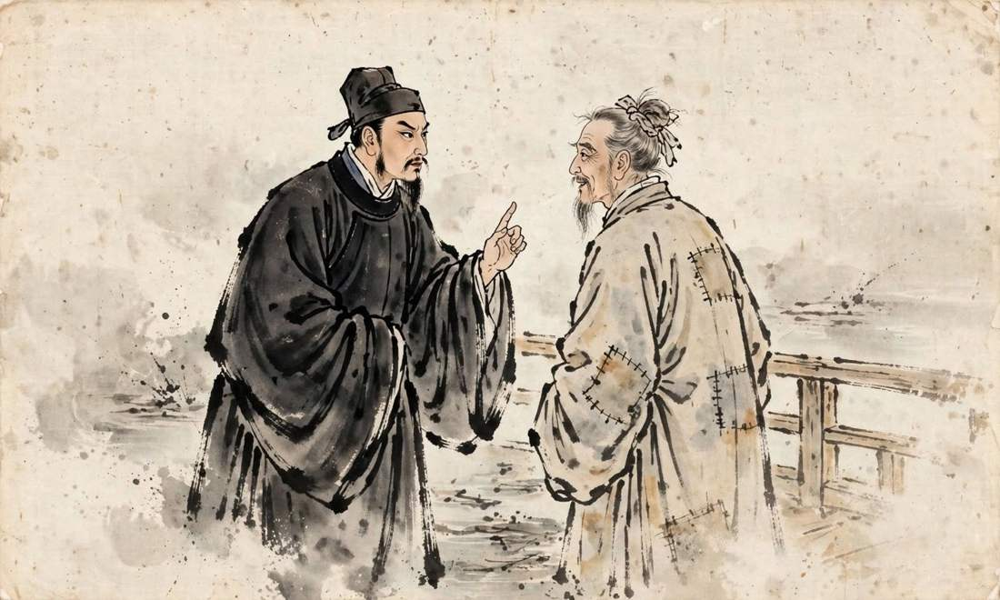
HuiziTu n’es pas un poisson. Comment sais-tu qu’ils sont heureux ?
Huizi, logicien, objecte (la question est celle de la connaissance d’autrui) : « Tu n’es pas un poisson. Comment saurais-tu ce qui rend les poissons heureux ? »
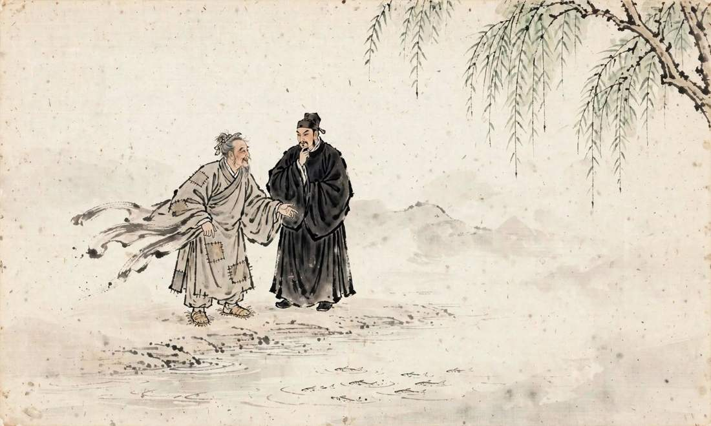
ZhuangziTu demandes « comment » je le sais : tu supposes donc que je le sais. Je le sais d’ici, sur le pont.
Zhuangzi renvoie l’argument : « Tu n’es pas moi. Comment sais-tu que je ne sais pas ? » Huizi insiste : puisqu’il n’est pas Zhuangzi, il ne peut pas savoir ce que Zhuangzi sait. Zhuangzi conclut : « Tu m’as demandé comment je le savais : tu supposais donc que je le savais. Je le sais d’ici, au-dessus de la rivière. »
Planche 4
Le chant sur la jarre
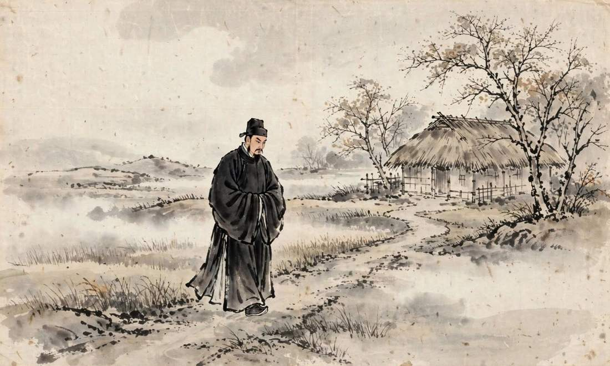
HuiziToutes mes condoléances, mon vieil ami.
La femme de Zhuangzi vient de mourir. Huizi vient lui présenter ses condoléances.
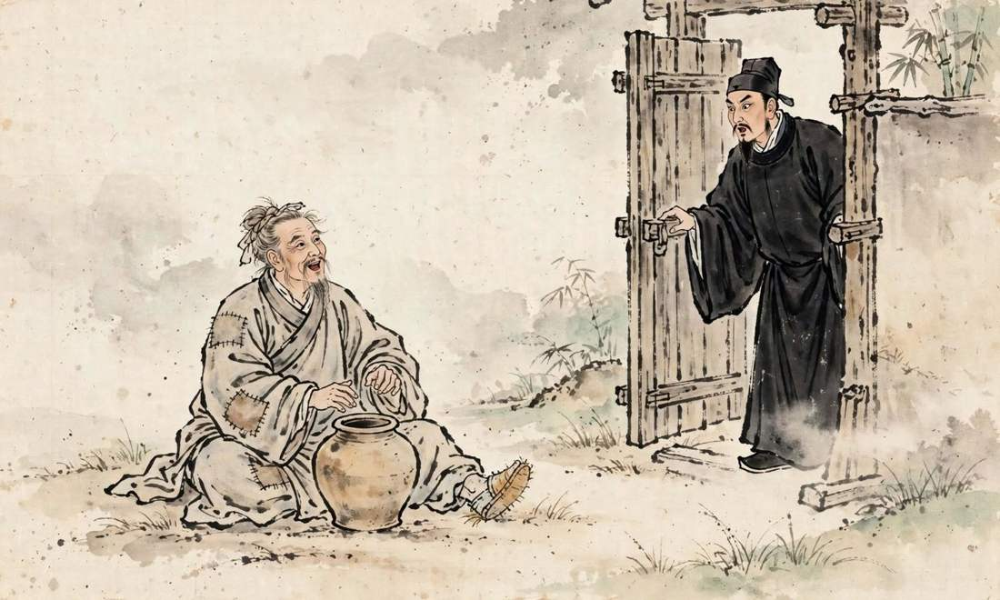
HuiziTu chantes ?
Il trouve Zhuangzi assis par terre, jambes écartées, frappant sur une jarre en chantant.
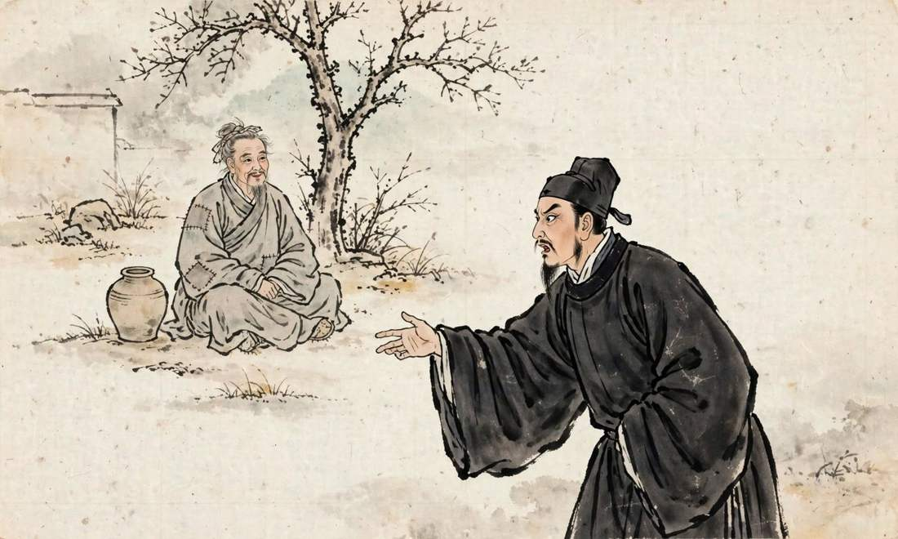
HuiziNe pas pleurer, passe encore. Mais chanter, c’est trop !
Huizi s’indigne : « Elle a vécu avec toi, élevé tes enfants, vieilli à tes côtés. Ne pas pleurer, passe encore. Mais chanter en frappant une jarre, c’est trop ! »
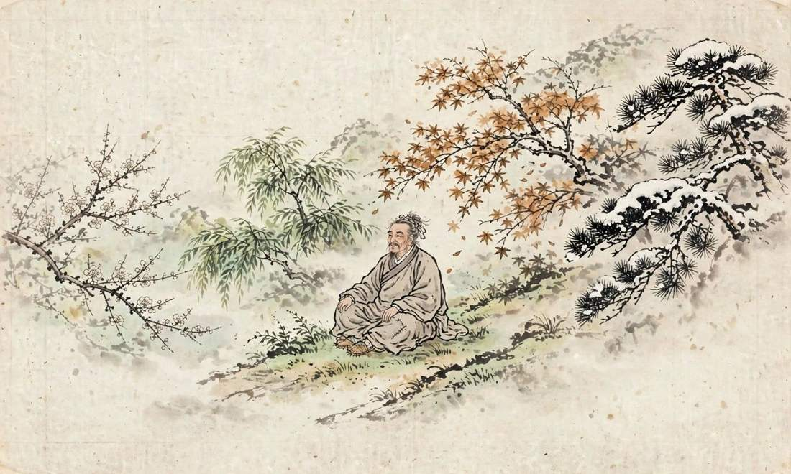
ZhuangziNaître, mourir : c’est comme le printemps, l’été, l’automne, l’hiver.
Zhuangzi explique : au début, il a été bouleversé. Puis il a pensé qu’avant sa naissance sa femme n’était ni forme ni souffle ; elle a pris forme, vécu, et la voilà qui retourne à l’état d’avant, comme se succèdent les saisons. Pleurer serait refuser ce cycle.